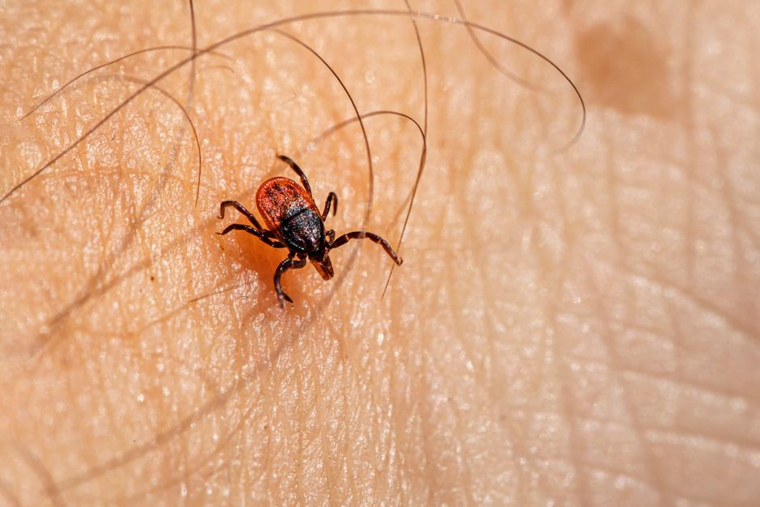

Identifying and Treating Skin Parasites in Cats: A Step-by-Step Guide
Photo: Helena Jankovičová Kováčová / Pexels
Living with a cat can be a joyful experience, but it can also bring unexpected challenges, such as dealing with skin parasites. If your feline friend starts scratching more than usual or you notice signs of discomfort, it’s crucial to identify and address the issue promptly. In this article, we’ll walk you through the steps to recognize skin parasites in your cat and provide effective treatment options.
Understanding Common Skin Parasites in Cats
Cats can be affected by several types of skin parasites, each with their own characteristics and treatments. The most common ones include:
- Fleas: These tiny, wingless insects are the most prevalent external parasites, often causing intense itching and hair loss.
- Ticks: Larger than fleas, ticks are known to transmit diseases such as Lyme disease and can be harmful to your cat’s health.
- Mites: Mites can be categorized into two types—demodectic mites (which usually affect the hair follicles) and sarcoptic mites (which cause scabies).
- Lice: These pests are rare in cats but can be found, causing intense itching and discomfort.
Identifying Skin Parasites

Photo: Erik Karits / Pexels
The first step in dealing with skin parasites is recognizing the symptoms. Here are some signs to look out for:
- Excessive scratching or biting: This is the most common sign of skin parasites, as cats will often try to relieve the intense itching.
- Hair loss: Fleas and mites can cause areas of hair loss, especially around the neck, tail, and abdomen.
- Redness and inflammation: Parasites can cause the skin to become red and inflamed, leading to sores and skin infections.
- Dandruff-like flakes: Ticks and mites can leave behind tiny, flaky particles on your cat’s coat.
- Black spots on the fur: These are often flea dirt, which are the excrement of fleas and can be a sign of infestation.
Steps to Identify and Treat Skin Parasites
1. Consult Your Veterinarian
If you suspect your cat has a skin parasite, the first step is to take them to the vet. A veterinarian can perform a physical examination and, if necessary, take a skin sample to identify the specific parasite. This is crucial because different parasites require different treatments.
2. Use Over-the-Counter Treatments
While a vet visit is important, there are several over-the-counter treatments you can use to manage the situation. Here are some options:
- Flea and Tick Treatments: These can be applied topically or through oral medication. Make sure to follow the instructions carefully and use the product as directed. For example, some treatments need to be applied every month to keep fleas at bay.
- Anti-itch Creams: These can provide temporary relief from itching. Look for products containing ingredients like hydrocortisone, which can help soothe the skin.
- Mite Treatments: For mites, specific medications like ivermectin may be prescribed. Ensure that you use these treatments exactly as directed by your veterinarian.
3. Home Treatments
While professional treatment is crucial, there are some home measures you can take to help your cat feel better and prevent reinfestation:
- Regular Bathing: Gently bathing your cat with a mild flea shampoo can help remove parasites and reduce itching. Limit baths to once a week, as frequent bathing can dry out your cat’s skin.
- Environment Clean-Up: Fleas can hide in your cat’s bedding, carpet, and furniture. Wash bedding and vacuum frequently to reduce the parasite population. Use a HEPA filter vacuum cleaner, which can capture microscopic fleas and their eggs.
- Outdoor Prevention: If your cat spends time outdoors, keep them in a flea-free environment as much as possible. Consider using a flea collar or an anti-flea spray, but check with your vet before using any new products.
A Real-World Example
Let’s consider a scenario where you notice your cat is scratching more than usual. You notice some redness and hair loss around their neck. Here’s how you would proceed:
- Examine Your Cat: Look closely at the affected area for any signs of fleas, ticks, or mites. You might see tiny black dots (flea dirt) or small, flaky particles.
- Visit the Vet: Schedule an appointment with your vet. They will examine your cat and possibly take a skin sample.
- Treatment Plan: Based on the vet’s diagnosis, they will prescribe the appropriate treatment. For example, they might recommend using a monthly flea and tick treatment and a topical anti-itch cream.
- Home Measures: Implement the home measures suggested by your vet, such as regular bathing, vacuuming, and keeping your cat indoors more often.
By following these steps, you can effectively identify and treat skin parasites in your cat, ensuring they remain healthy and comfortable. Remember, early intervention is key to preventing complications and ensuring your feline friend stays parasite-free.
Recommended products
As an Amazon Associate, I earn from qualifying purchases.